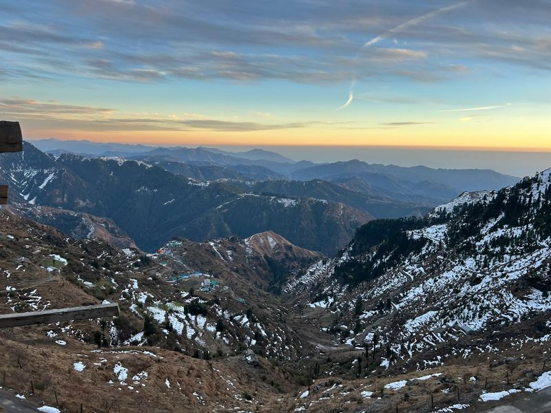
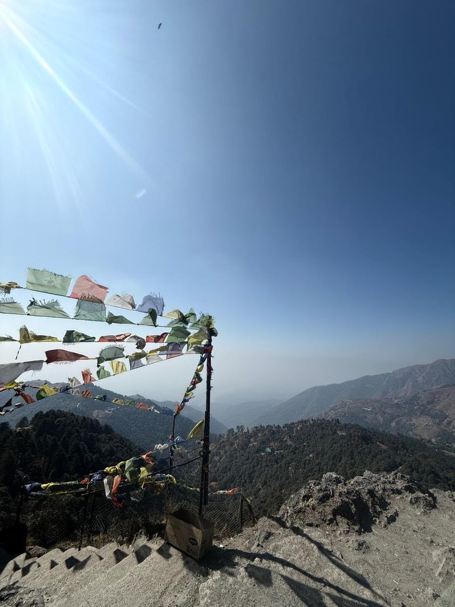
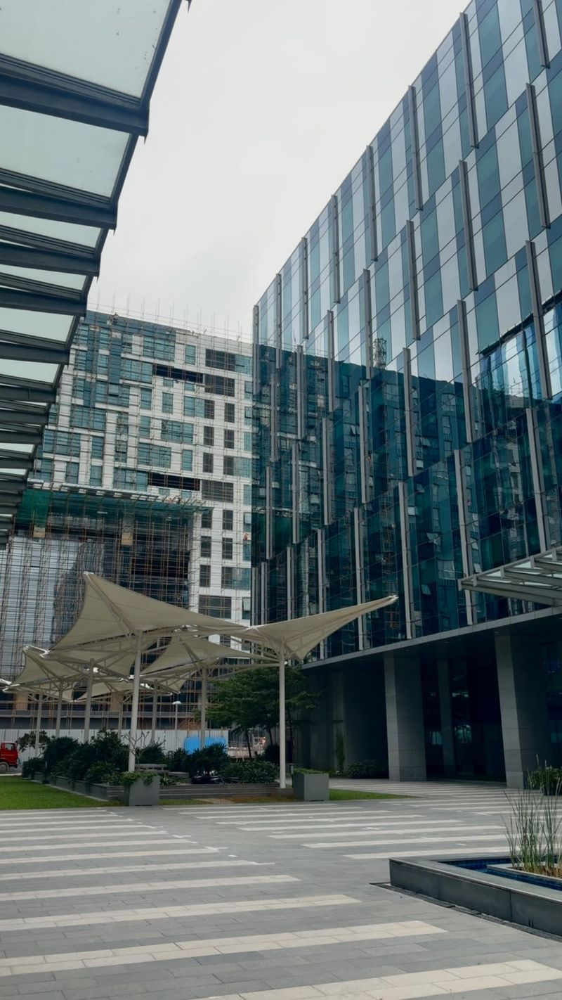
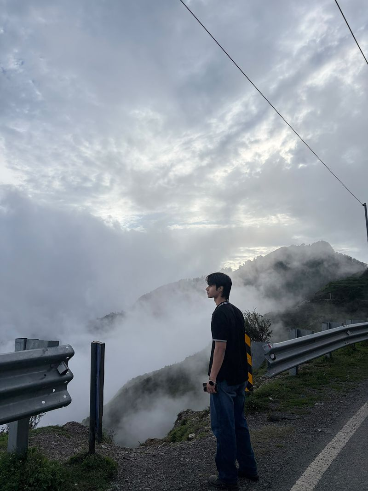
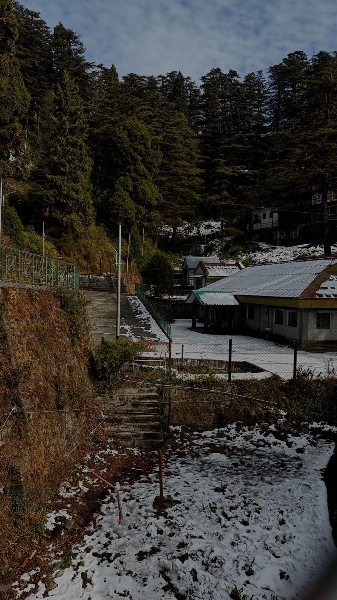
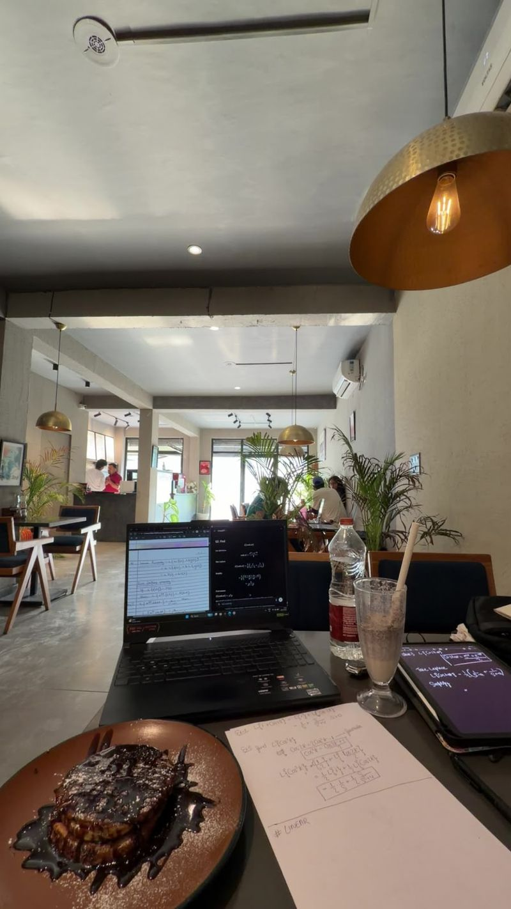
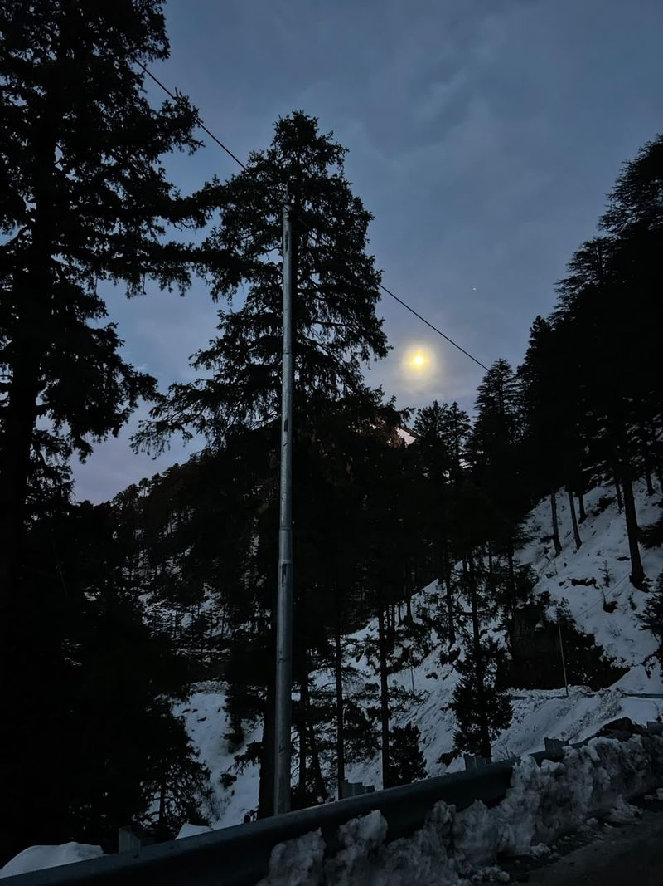

The Quiet Mathematics of Life
A book in progress. Physics metaphors for the patterns that run underneath a life, carried by a protagonist named Vihaan. Slower work than shipping, and better for it.
He builds retrieval systems that refuse to answer without a source.
Prove retrieval. Prove citation. Prove source.
Dodged 0 / 5 · ← → or drag
Caught 0 / 3 · ← → or drag
Vibhor Pandey
Click anywhere · sound on
B.Tech CSE (AI/ML) '29, UPES · Second year · Solo founder, Veil · CFA L1 candidate
Retrieval, citation integrity, and financial NLP. Mostly the unglamorous part: making a machine say this number, from this table, on this page — and fail loudly when it can't.
01 — Building
Veil is the umbrella. Everything under it enforces the same rule: no claim ships without a source it can be checked against.
A language server for research papers. You write LaTeX and it checks the document live, the way a compiler checks code. An undefined citation key is an unresolved symbol. A citation that resolves to nothing in any scholarly index is a type error. An empirical claim with no source attached is a linter warning. The severity ladder is the point: the editor already knows how to show you all three, so the paper gets read the way the code does.
Verification runs a precision-first cascade across OpenAlex, Crossref, arXiv and Semantic Scholar, stopping at the first index that answers confidently rather than polling all four. Compilation shells out to a real pdflatex or Tectonic subprocess, so what you read in the console is the toolchain's own transcript rather than a rendering of it.


An AI-native terminal for Indian small and mid caps — the segment where coverage is thinnest and the filings are the only real signal. Hybrid retrieval over annual reports and disclosures, answers pinned to the line that produced them.
Five expert modes — research, biology, flywheel, write, mathematics — over one retrieval spine. Bring your own keys. The interesting constraint is that a mode can refuse to answer, and that refusal is the feature.
Research · in progress
Face verification that replaces cosine similarity with localized spatial sign-agreement patterns — comparing where two embeddings agree in sign across regions of the face, rather than how closely they point in the same direction overall.
There is no result worth citing yet. That is why it sits here and not in the evidence table below.
02 — Method
Across products, benchmarks and hackathons I keep rebuilding one pipeline, because it keeps being the honest answer. The retriever above is running a small version of it right now.
Before this I was building CNC machines and an ESP32 voice assistant, which is where the habit came from: if you can't measure it, you haven't built it. Software just made the feedback loop faster.
03 — Evidence
Benchmarks, hackathons, and one paper in progress. Metrics are the ones I measured, not the ones I'd like.
| Work | What it does | Result | Yr |
|---|---|---|---|
| Aurelius pilot | Ran the citation gate over real drafts and counted what it caught.
The measure that matters for a checker is what it flags, not what it compiles. |
23% of checked citations flagged unsupported 60 trials | '26 |
| FinNLP benchmark | Cross-table numerical QA over Indian annual reports — KPIT, Syngene, CAMS. The task is
answering a number that only exists once you join two tables.
Targeting FinNLP @ EMNLP / ACL. |
in progress | '26 |
| Veil Research | Five-mode research workspace on one retrieval spine, bring your own keys.
Early access, FITT incubation. |
2,400+ researchers in early access | '26 |
| SMRITI / Hello Doctor | Consent-gated longitudinal clinical memory agent on Google ADK + Gemini. Memory that
can be recalled only where consent covers it.
HiDevs × AI House, national finale. |
Recall@1 0.946 MRR 0.968 0 consent leaks | '26 |
| EchoMind | Institutional memory agent — BM25 + BGE-M3, Qdrant hybrid retrieval, RRF fusion,
cross-encoder rerank, ADK multi-agent orchestration.
Google Agent Labs 2026, as VeilTeam. |
Best use case of Lyzr | '26 |
| redrob-ranker | Hybrid candidate-ranking pipeline; later adapted as a Lemma pod for a second hackathon.
Redrob × H2S INDIA.RUNS. |
76/76 tests | '26 |
| LendLens | Credit decisioning platform — XGBoost, SHAP attributions, uplift modelling, fairlearn
constraints. Built for IDBI Bank's hackathon.
Explainability was the deliverable, not the model. |
SHAP + fairlearn | '25 |
| QLLM survey | Co-authored survey on quantized large language models.
First paper. |
co-author | '25 |
| AI Founders Lab | Selected for UPES Runway's 10-week pre-incubation programme.
Pre-seed track up to ₹5,00,000. |
selected | '26 |
Worked with teams from
04 — Margins
A book in progress. Physics metaphors for the patterns that run underneath a life, carried by a protagonist named Vihaan. Slower work than shipping, and better for it.
Zerodha for equities, Delta for derivatives, Obsidian for the notes that make the difference. Studying for CFA Level 1 — the terminal came out of the trading, not the reverse.
Daily problems in C++, and a longer bet: contributing toward Matplotlib or scikit-learn. Reading library internals is the fastest way to learn how good code holds up.
Read widely, mostly outside the field. Football on weekends. Training because a founder's worst bottleneck is usually energy, not ideas.
One lab assistant for researchers, engineers and technical organisations — where every step of a chain of reasoning is checkable against a source. Everything above is a piece of it.







Horizon, at length
The thing I want to exist is not a smarter model. It is a lab assistant that will not let a chain of reasoning through unless every step in it points at something you can open and read. Not a confidence score. Not a footnote generated after the fact to make an answer look sourced. The actual line, in the actual document, that the claim rests on.
Most of what I have built so far is one piece of that, approached from a different side each time. Aurelius does it for a paper you are writing, by treating an uncited claim the way a compiler treats an undefined symbol — a thing you must resolve before you ship, not a note you can dismiss. Veil Finance does it for a filing, where the number you want usually exists only once you join two tables and nobody has checked the join. Veil Research does it for a working session, where the mode is allowed to say it cannot answer. SMRITI did it for a clinical record, where the constraint was consent rather than citation, and the finding I care about is the zero, not the recall.
The reason this is a fifteen-year problem rather than a product cycle is that the hard part is not retrieval. Retrieval is well understood and I keep rebuilding the same pipeline because it keeps working. The hard part is the refusal — building a system whose default, when it cannot find a source, is to stop and say so, and then designing everything around it so that stopping is not a failure state that people route around. A tool that is right 95% of the time and silent about which 5% is worse than a slower tool that tells you.
I am two years into a four-year degree, so the honest framing is that I have built the small versions and measured them. The numbers on this page are the ones I have. What is not here yet is the part where any of this holds up outside a demo workspace and a benchmark I chose.
05 — References
Best for: research engineering, applied retrieval, financial NLP, or an early-stage team that needs someone who ships and measures. Fastest reply is email.